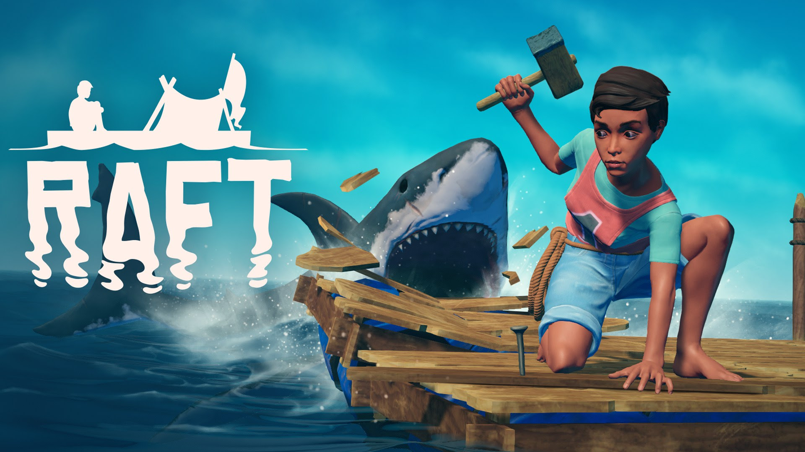

My Top 3 Steam Games
All images are links
Ascending in ARK Survival Evolved: Unlocking the Next Level of Adventure
ARK Survival Evolved is undeniably one of the most enthralling and challenging survival games available today. It combines elements of crafting, exploration, and combat with prehistoric and mythical creatures in a vast open-world environment. Among the many milestones and achievements in this game, ascending is undoubtedly one of the most highly anticipated and sought-after goals for players. In this blog, we will delve into the captivating world of ARK Survival Evolved's ascension mechanic, exploring what it entails and the rewards it brings.

Journey to Survival: A Comprehensive Look at Raft
In the vast ocean, where endless blue merges with the horizon, lies a unique survival adventure that will test your endurance, creativity, and resourcefulness. Raft, a popular game on the Steam platform, immerses players in a world where survival depends on a single structure—a makeshift raft that floats amidst unending waves.Raft has cemented its place as a must-play title for those seeking an oceanic adventure. So, gather your courage, wield your hook, and embark on an unforgettable journey to create your floating oasis of survival!

Overcooked 2: A Delicious Collaboration
Are you ready to dive into the exciting world of culinary chaos and collaboration? Look no further than Overcooked 2, the beloved sequel to the wildly popular cooking game. Developed by Ghost Town Games and published by Team17, this sequel takes everything that made the original Overcooked a hit and supersizes it with added ingredients, challenges, and pure mayhem. So, grab your apron, sharpen your knives, and prepare yourself for a gastronomic journey like no other. Overcooked 2's explosive multiplayer excitement and mouthwatering challenges await your culinary skills. So let the madness begin, and bon appétit!